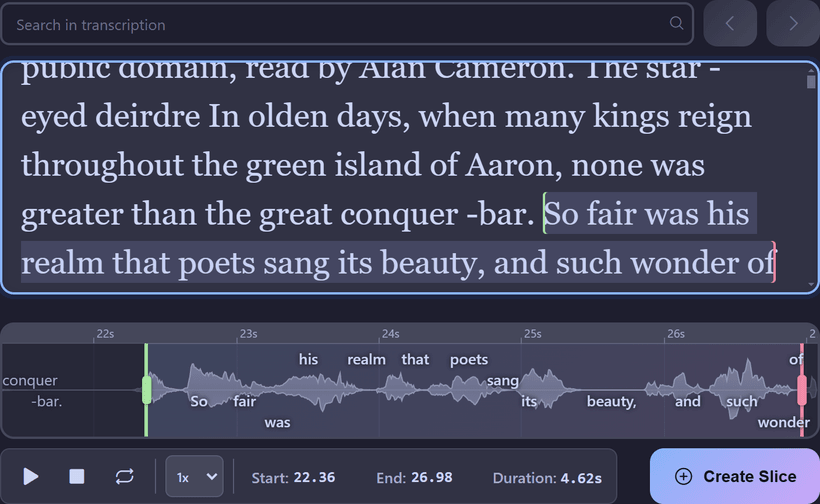

Offline audio slicing for Mac & Windows
Cut audio by selecting text.
Vocal Slice transcribes your recording on your own machine, then lets you pull clips by highlighting words. Select a phrase and the waveform jumps straight to it — trim, preview, export at source quality.
Free 7-day trial · every feature · no account, no card. Also for macOS. Also for Windows.

How it works
Three steps, no round trips.
Everything happens inside the app on your own machine — there's no upload step, and no waiting on a server.
1 · Load your audio
Open a WAV, MP3, FLAC, M4A or OGG file. Vocal Slice transcribes it locally with Whisper, producing timestamps down to the individual word.
2 · Select the words
Highlight a phrase in the transcript. The waveform zooms to exactly that region, with draggable start and end handles for frame-accurate trimming.
3 · Export the slice
Preview it on loop, then export. WAV sources are cut byte-perfect — no re-encoding, no generation loss — and named from your own filename template.
Features
Built for people who cut audio all day.
Nothing leaves your machine
Transcription and slicing run entirely on your device. Your audio and transcripts are never uploaded — there's no account and no telemetry.
Source-quality exports
WAV files are sliced losslessly at the byte level, preserving the original sample rate and bit depth. Other formats decode to 24-bit WAV.
Filenames that make sense
Name slices with a template — {source}_{index}_{slug}, timestamps, or your own scheme — so a folder of clips stays navigable months later.
Speaks your language
English and multilingual Whisper models, from fast and light to slow and accurate — with optional translation to English.
GPU accelerated
Uses WebGPU where your hardware supports it, and falls back to CPU automatically — so it runs on the machine you already have.
Yours to set up
Five themes, adjustable transcript typography, and a searchable transcript — small things that matter when you're in a tool for hours.
Pricing
Buy it once a year. Keep it forever.
One licence, three machines. If you stop renewing, the app carries on working — you simply stop receiving new versions.
- A perpetual licence. The version you buy is yours to keep and use indefinitely.
- A year of updates. Every improvement and new feature released in your first 12 months.
- Three activations. Use it on your desktop, your laptop, and one more.
- A 7-day trial first. Full features, no account, no card.
Lapsing never breaks the app. Renew when you want the newer builds; otherwise keep running the version you paid for, for as long as you like.
Secure checkout via Lemon Squeezy · VAT included
Requirements
What you'll need.
- Operating system
- Windows 10 or 11 (64-bit), or macOS 11 Big Sur and later
- Graphics
- A WebGPU-capable GPU is recommended; CPU fallback included
- Disk space
- ~200 MB for the app, plus 75–500 MB per transcription model
- Internet
- Needed once to download a model and activate your licence — not for transcribing
Download
Try it on your own audio.
Seven days, every feature, no account and no card. The trial is the point — the only question worth answering is whether it handles your recordings.
Windows 10/11 64-bit · macOS 11 and later (Apple Silicon and Intel). Prefer not to install? Grab the portable build.
Windows may warn you the first time. Vocal Slice isn't yet signed with a code-signing certificate, so SmartScreen shows “Windows protected your PC — unknown publisher”. Choose More info → Run anyway to continue.
That warning is about the absence of a certificate, not about anything found in the file. Certificates are priced for companies rather than individuals, and buying one is on the list once the app supports it. If you'd rather verify the download yourself, every release lists a SHA-256 checksum on its release page.